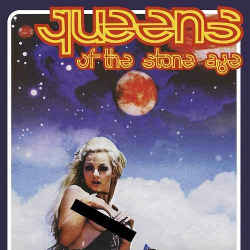
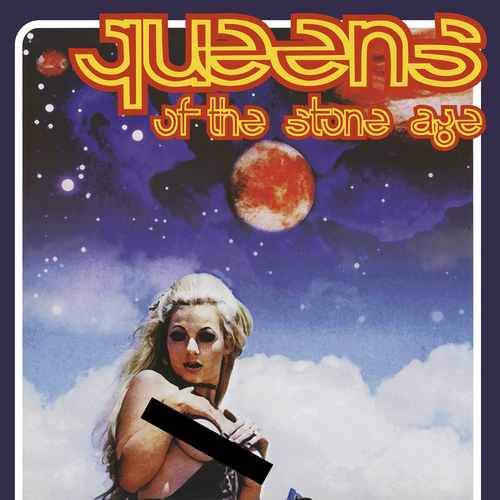

Recap Assignment
Why I love Queens of the Stone Age
Queens of the Stone Age is my favourite band. I've seen them play in concert three times, and they are the best live band of all time. I was front row center for their Halifax show, and second row for their shows in Moncton and Maine. I hope that someday I will be able to meet Queens of the Stone Age because they are a huge influence on the music that I make with my band. Some of my favourite Queens of the Stone Age songs are The Bronze, Mexicola, In The Fade, God Is In The Radio, and Era Vulgaris. My two favourite albums by Queens of the Stone Age are Songs for the Deaf and their self-titled album (both pictured below).
 
